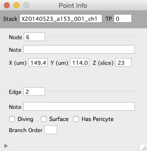

Stack
Each timepoint is a 3D volume (a stack).
Examples
Interface
- Mouse wheel to scroll up and down through images
- Image contrast is critical, set it with the sliders. Oen and close contrast bar with keyboard ‘c’
- View a histogram with keyboard ‘h’
Keyboard commands
Arrow keys to pan left/right and up/down in the image
+/- keys to zoom in/out
Return/Enter keys to zoom all the way out
Left mouse button to select objects
Esc : Cancel selection
1 : view channel 1
2 : view channel 2
3 : view a sliding maximal z-projection of channel 1
4 : view a sliding maximal z-projection of channel 2
c : toggle contrast control bar
h : open histogram window
] : toggle between two different window sizes
sift+c : cycle through 4 different window 'candy' displays
shift+p : Set pixel/voxel size
shift+? : open the 'Point Info' window
Object notes can be set in the Point Info window.
Histogram
- Open the histogram window with keyboard ‘h’.
- The histogram window shows a pixel intensity histogram for one image.
- Scroll through the image and the histogram for each image will be show.
Navigation window
- Right click and select ‘Navigation Window’ menu. A navigation window will be opened and your current zoomed view of the stack will be shown as a blue square.
- Zoom with +/- or pan with arrow keys and the blue-square tracks what you are looking at.
- The navigation window is, by default, a maximal z-projection of the entire stack.
Point info

The Point Info window shows information about the currently selected object.
Open the Point Info window from any stack window using shift+?.
Use the point info window to annotate either nodes or edges with notes.
Use the point info window to annotate edges as ‘diving’, ‘surface’, ‘Has Pericyte’ and ‘Branch Order’.
Notes
- Closing a stack window does not remove the stack from memory.